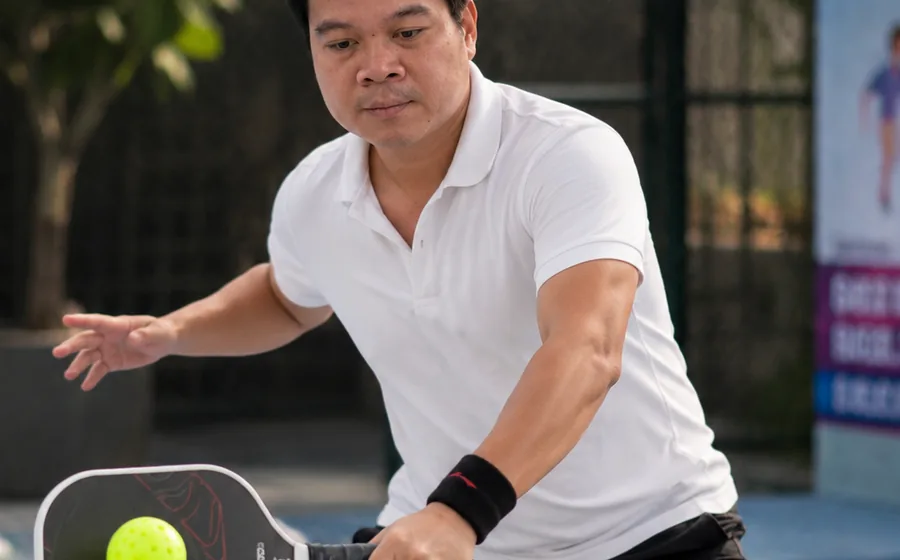

Pickleball dễ bắt đầu nhưng không đồng nghĩa mọi thói quen hình thành lúc đầu đều đúng. Nhiều người có thể đưa bóng qua lưới sau vài buổi, sau đó lại mắc kẹt ở các lỗi như cầm vợt quá chặt, đứng sai vị trí, điểm chạm bóng không ổn định hoặc chỉ biết đánh mạnh. Khi các lỗi này lặp lại đủ lâu, việc sửa thường tốn nhiều thời gian hơn học đúng ngay từ đầu.
Đó là lý do hình thức học Pickleball 1 kèm 1 phù hợp với nhóm muốn nhận phản hồi liên tục. Tuy nhiên, người học vẫn cần hiểu rõ mục tiêu và giới hạn của hình thức này để tránh kỳ vọng rằng chỉ cần thuê huấn luyện viên là tự động lên trình.
Học Pickleball 1 kèm 1 khác lớp nhóm ở điểm nào?
Trong lớp nhóm, huấn luyện viên phải chia thời gian cho nhiều người. Học viên có thêm bạn tập và nhiều tình huống giao tiếp trên sân, nhưng số lần được quan sát chi tiết sẽ ít hơn. Trong buổi 1:1, bài tập có thể thay đổi ngay khi huấn luyện viên phát hiện lỗi ở grip, footwork, góc mặt vợt hoặc quyết định chọn cú đánh.
| Tiêu chí | Học 1 kèm 1 | Học nhóm |
|---|---|---|
| Mức độ cá nhân hóa | Cao, bài tập xoay quanh lỗi và mục tiêu của một người. | Giáo án phải phù hợp trình độ chung của cả nhóm. |
| Thời gian chờ | Ít, phần lớn thời gian là tập và nhận phản hồi. | Có thể phải chờ đến lượt hoặc luân phiên bài tập. |
| Thực hành phối hợp | Cần thêm buổi thực chiến hoặc người đánh cùng. | Dễ tổ chức tình huống đôi ngay trong lớp. |
| Chi phí mỗi người | Thường cao hơn. | Dễ chia sẻ chi phí giữa các học viên. |
Năm lợi ích rõ nhất của việc học riêng
1. Phát hiện lỗi gốc thay vì chỉ sửa kết quả
Một quả bóng đi ra ngoài có thể đến từ nhiều nguyên nhân: mặt vợt mở, điểm chạm quá muộn, chân chưa vào vị trí hoặc lực tay không ổn định. Phản hồi 1:1 giúp tìm đúng nguyên nhân thay vì chỉ nhắc “đánh nhẹ lại”. Khi lỗi gốc được xử lý, nhiều biểu hiện sai khác cũng giảm theo.
2. Lượng bóng và số lần lặp lại nhiều hơn
Trong cùng 90 phút, học viên học riêng thường có nhiều lượt chạm bóng hơn so với lớp đông. Điều này có ích khi cần xây cảm giác bóng, tập một đường bóng cố định hoặc điều chỉnh chuyển động nhỏ. Số lần lặp lại chỉ có giá trị khi kỹ thuật được kiểm tra liên tục; lặp sai nhiều lần sẽ củng cố thói quen sai.
3. Giáo án đi theo thể lực và kinh nghiệm thật
Người từng chơi tennis có điểm mạnh và lỗi chuyển đổi khác người xuất phát từ cầu lông hoặc chưa từng chơi môn vợt. Lộ trình riêng có thể giữ lại lợi thế sẵn có, đồng thời ngăn các thói quen từ môn cũ ảnh hưởng tới cú dink, reset hoặc cách di chuyển trong khu vực kitchen.
4. Dễ sắp lịch cho người bận rộn
Người đi làm thường không thể theo một lớp cố định nhiều tuần. Học riêng cho phép thống nhất khung giờ phù hợp giữa học viên, huấn luyện viên và sân. Tính linh hoạt này giúp duy trì nhịp học đều, thay vì nghỉ dài rồi phải làm quen lại từ đầu.
5. Tiến bộ có thể theo dõi bằng video và tiêu chí
Video ngắn ở cùng một góc quay giúp so sánh tư thế, điểm chạm và nhịp di chuyển giữa các giai đoạn. Thay vì cảm giác mơ hồ “hình như đánh tốt hơn”, học viên có thể nhìn vào tỷ lệ giao bóng hợp lệ, số quả rally ổn định hoặc khả năng giữ bóng thấp trong một bài tập cụ thể.
Ai nên chọn học Pickleball 1:1?
- Người mới hoàn toàn: muốn học cách cầm vợt, tư thế, giao bóng và di chuyển đúng ngay từ đầu.
- Người chơi nhiều nhưng không ổn định: có một vài cú đánh tốt nhưng sai số lớn và chưa tìm được nguyên nhân.
- Người cần sửa một kỹ thuật cụ thể: chẳng hạn backhand, third-shot drop, reset, volley hoặc footwork.
- Người chuẩn bị thi đấu: cần phân tích quyết định, vị trí đứng và chiến thuật đôi theo tình huống thực tế.
- Người có lịch bận: muốn mỗi buổi tập trung vào mục tiêu rõ ràng và hạn chế thời gian chờ.
Khi nào lớp nhóm đã đủ?
Nếu mục tiêu chính là vận động, làm quen cộng đồng và chơi vui với bạn bè, lớp nhóm có thể kinh tế và phù hợp hơn. Người đã có nền kỹ thuật ổn định cũng có thể chỉ cần thỉnh thoảng đặt một buổi riêng để kiểm tra lỗi, sau đó dành phần lớn thời gian cho đánh trận.
Một phương án cân bằng là học riêng trong giai đoạn xây nền hoặc sửa lỗi, rồi xen kẽ buổi nhóm và thực chiến. Cách này vừa duy trì phản hồi cá nhân, vừa tạo đủ tình huống để luyện đọc trận đấu và phối hợp cùng đồng đội.
Cách đánh giá một buổi học riêng có đáng tiền không
- Buổi đầu có kiểm tra trình độ và hỏi mục tiêu cụ thể hay không.
- Huấn luyện viên có giải thích nguyên nhân của lỗi, không chỉ yêu cầu làm theo.
- Bài tập có chỉ số đo được: số lần liên tiếp, vùng đích, tỷ lệ thành công hoặc thời gian phản ứng.
- Có tóm tắt sau buổi và bài tập tự luyện giữa hai lần học.
- Sau một số buổi có đánh giá lại bằng video hoặc bài kiểm tra tương đương.
Lộ trình 1:1 nên bắt đầu như thế nào?
Một buổi đánh giá đầu vào giúp xác định trình độ hiện tại trước khi mua gói dài. Tại 5P, học viên được kiểm tra các nhóm tiêu chí kỹ thuật và chiến thuật, xác định những lỗi ảnh hưởng lớn nhất rồi mới đề xuất lộ trình. Người mới có thể tập trung vào grip, ready position, footwork, forehand, backhand và giao bóng; người đã chơi sẽ đi sâu vào kitchen, reset, volley, drop shot và quyết định trong trận.
Bạn có thể xem chi tiết lộ trình huấn luyện Pickleball 1:1 hoặc tham khảo bài học Pickleball bao nhiêu buổi thì chơi được để chọn nhịp học phù hợp.
Muốn biết học riêng có phù hợp với bạn?
Đăng ký một buổi đánh giá trước khi quyết định gói dài. 5P Team sẽ kiểm tra nền tảng, mục tiêu và đề xuất cách học phù hợp với lịch của bạn.
Đặt lịch đánh giá đầu vào